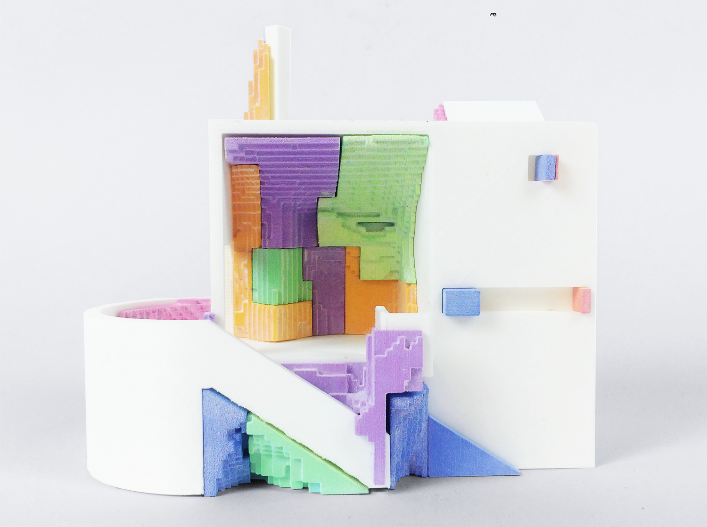
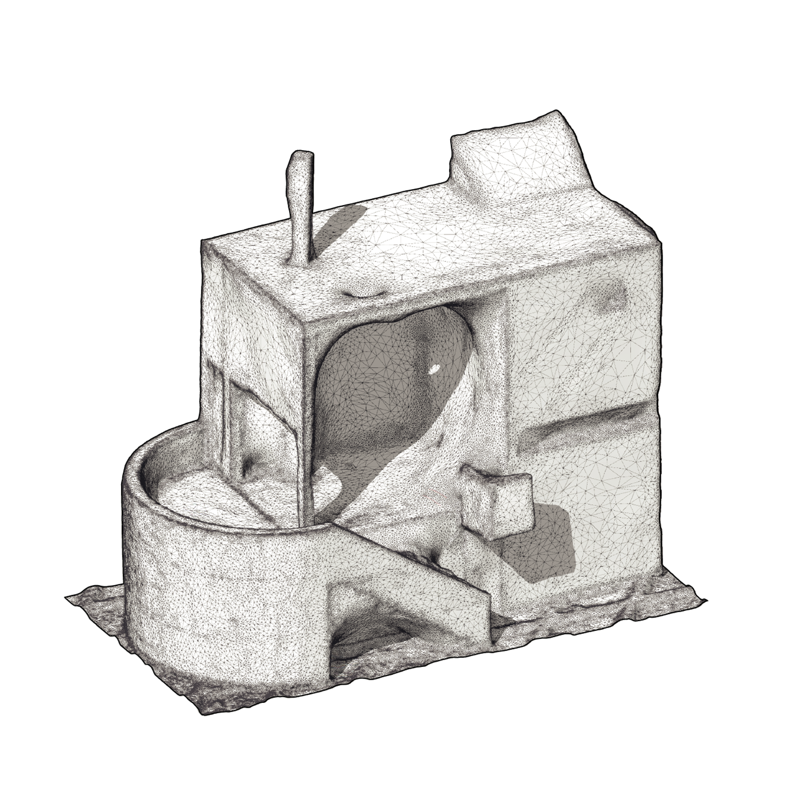
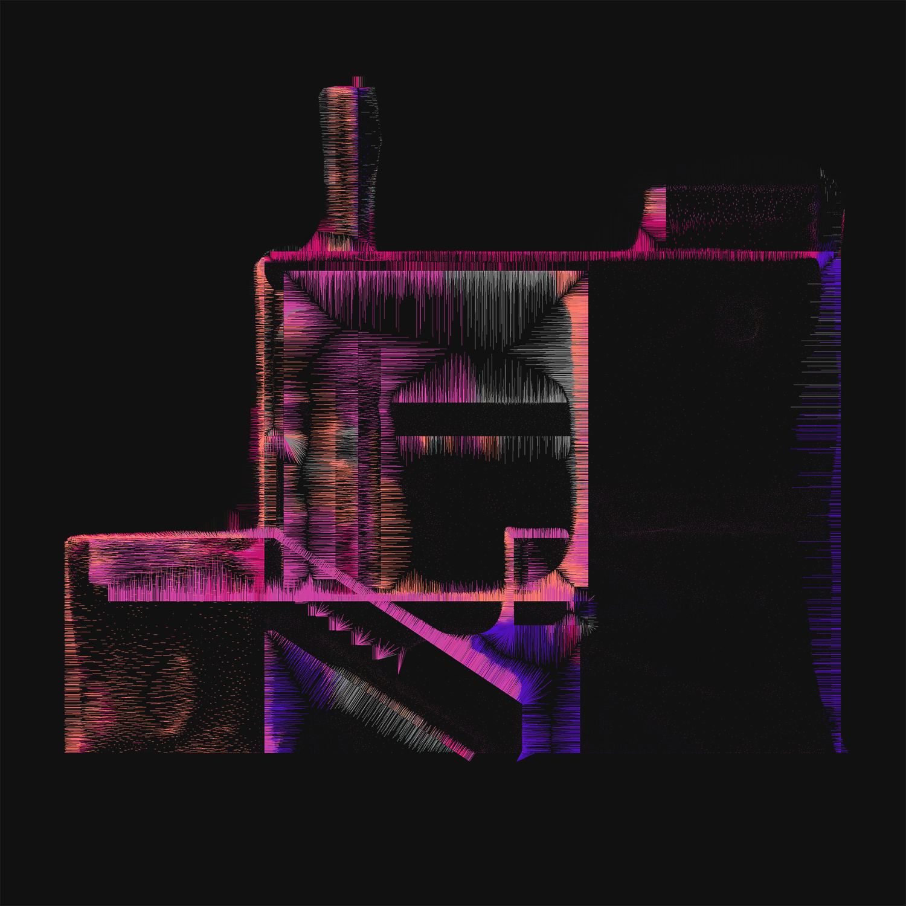
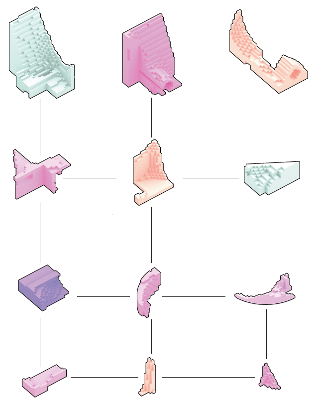

What difference does it make?
Study on media translations
Academic
An exercise on the role of representation and translations between the digital and physical. The project explores the difference and artefacts associated with each mode of representation as a source of design.
Course
Design & Communication Tools
Team
Jan Sahlberg, Paula Ahn
Year
2018
Tutors
Daniel Norell, Karin Hedlund
This design exploration is meant as a reflection on
current media and representation through out the architectural process.
The course of design and communication tools gave the task to “Remix” a facade using
transformation through different media, with a certain
emphasis on translations between digital and physical
representations. Different states of representation
bring out their own peculiarities or specific characters,
with each transformation bringing out a set of artefacts.
The purpose of this project is to use those as a source of design.
The design starts of from the “Gwathmey House”
designed by Charles Gwathmey which exist in some different iterations. A model of the building was downloaded from the internet and 3D printed, thus turning
it into a physical object. This model was in a following step brough back into the computer using photogrammetry (3D scanning), returning a mesh.
Observing this new model, one can see a deviation
from the intially printed form, as the 3D scanning
process removes clarity, and elements start
to blur together. This deviation was further mapped
into a series of volumes, defined by the misses of the
process. The volumes served as a new set of pieces
to complement the model. The error was printed and
subsequently added to the initial model.

The final piece with the "error" from the 3D scanning process as coloured additions.

The resulting mesh from the 3D scan of the initial print.

The resulting point cloud with colour sourced from the texture map of the scan.

The projection of the point in the scanned point cloud onto the original geometry.

The volumetric mapping of the error into a set of complementary pieces.